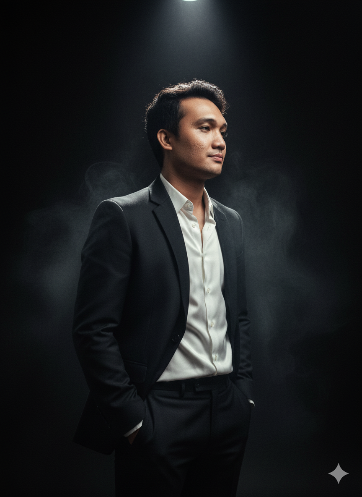

IT Support | IT Asset Management | Network Troubleshooting
Motivated IT professional with strong experience in IT support and IT asset management. Skilled in troubleshooting, system administration, and managing IT equipment across multiple sites. Passionate about improving system efficiency and continuously learning modern IT technologies.
Ubiquity Global Services (2023–2025)
Ubiquity Global Services (2022–2023)
Ubiquity Global Services (2019–2022)
Bachelor of Science in Information Technology
Major in Graphic Design
Southland College – 2017
Email: rodolfbryantabanda31@gmail.com
Phone: 09287500281
Location: Kabankalan City, Negros Occidental